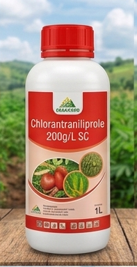
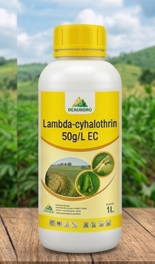
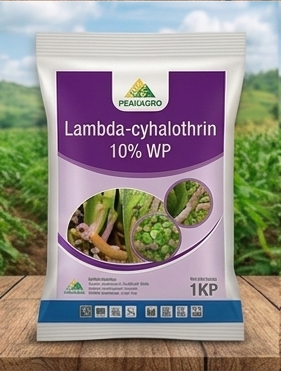
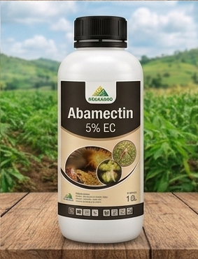
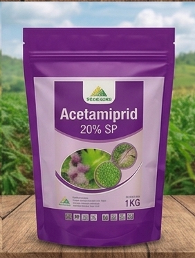
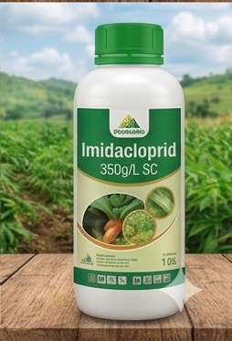

Crops: Maize, Rice, Sugarcane
Target: Fall Armyworm, Stem Borers
Usage: 10-15ml per 20L water

Crops: Vegetables, Fruit Trees, Cotton
Target: Aphids, Thrips, Whiteflies
Usage: 15-20ml per 20L water

Crops: Beans, Cabbage, Tomatoes
Target: Caterpillars, Leaf Miners
Usage: 20g per 20L water

Crops: Roses, Citrus, Strawberries
Target: Spider Mites, Leaf Miners
Usage: 10ml per 20L water

Crops: Coffee, Tobacco, Citrus
Target: Whiteflies, Mealybugs, Aphids
Usage: 10-20g per 20L water

Crops: Cereals, Tea, Vegetables
Target: Termites, Sucking Pests
Usage: 15-20ml per 20L water